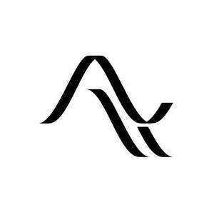

Trade Mark Journal No.2026/006 6 February 2026
UK00004322718 12 January 2026 (9,10,42)

- Class 9
- Hardware testing software; Wearable computer hardware; Wearable smartphones; Wearable digital electronic communication devices; Wearable activity trackers; Wearable communications devices in the form of wristwatches; Computer application software for use with wearable computer devices; Downloadable mobile applications for use with wearable computer devices; Software development kit [SDK]; Mobile apps; Cloud servers; Cloud server software; Cloud computing software; Downloadable cloud computing software; Cloud network monitoring software; Printed circuit boards; Printed circuits; Printed electronic circuits; Flexible printed circuits; Printed circuit boards incorporating integrated circuits; Testing apparatus for testing printed circuit boards; Test pins for testing printed circuit boards; Ceramic wafers bearing printed circuits.
- Class 10
- Smart glasses; Glasses; Eye glasses; Sun glasses; Spectacle glasses; Glasses frames; Glasses cases.
- Class 42
- Hardware design; Providing temporary use of online non-downloadable software development kits (SDKs); Cloud computing; Cloud computing services; Cloud hosting provider services; Cloud-based data protection services; Cloud storage services for electronic data; Cloud storage services for electronic files; Cloud storage services for electronic data lakes; Providing virtual computer environments through cloud computing; Consulting services in the field of cloud computing; Providing virtual computer systems through cloud computing; Consulting in the field of cloud computing networks and applications; Design and development of operating software for cloud computing networks; Programming of operating software for accessing and using a cloud computing network; Design and development of operating software for accessing and using a cloud computing network; Providing temporary use of online non-downloadable software for accessing and using a cloud computing network; Providing temporary use of on-line non-downloadable operating software for accessing and using a cloud computing network.
Awear Inc.
Representative: Hoffmann Eitle Patent- und Rechtsanwälte PartmbB